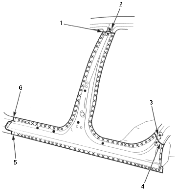

- Clamp the repair part and recheck the clearance alignment of the front door, rear door and front fender.
- Perform the main welding:
- Attach the patches at the cut section of the center pillar and wheel arch and plug weld them.

- Butt welding
- PATCH
- PATCH
- Butt welding
- Overlap
30 mm (1.2 in.)
- Fillet welding